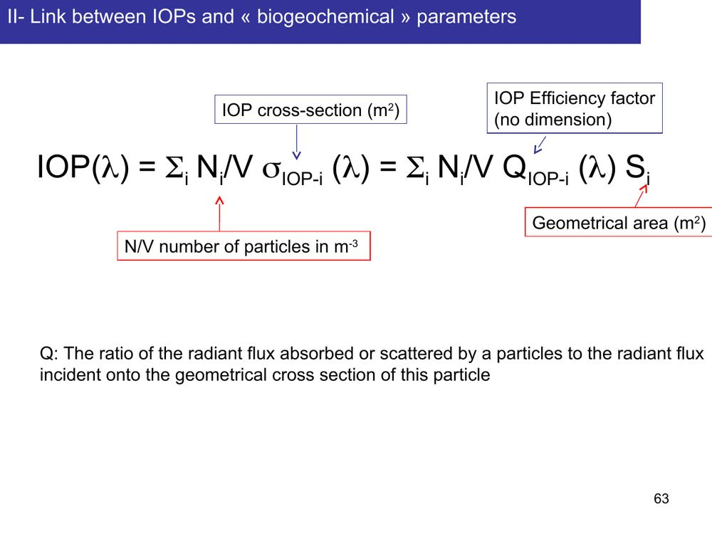
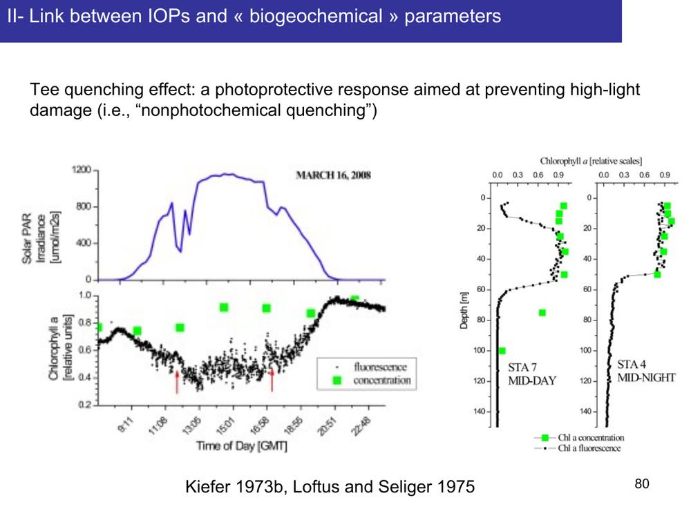
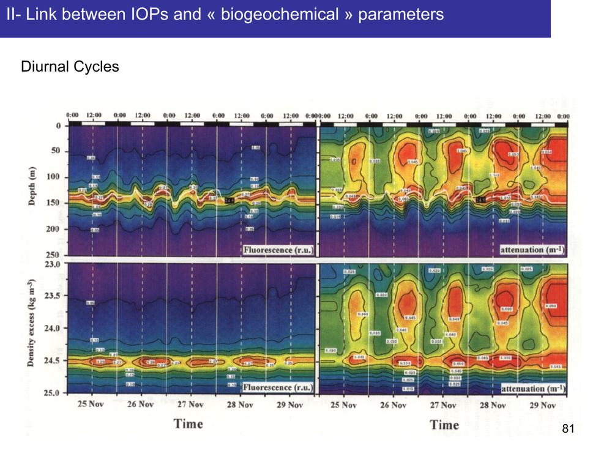
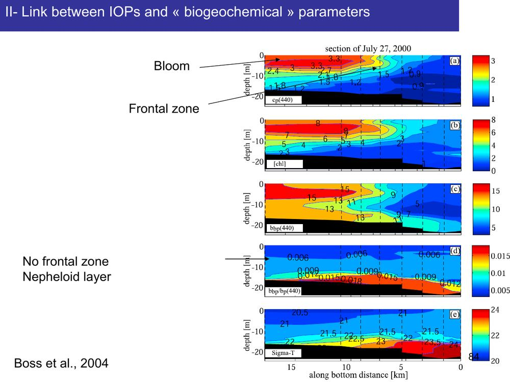

F · IOPs and biogeochemistry
From IOPs to Chl, POC, CDOM–DOC, fluorescence and diel cycles (slides 63–84)
IOP from particle properties

Lecture slide 63
- IOP = Σ (N/V) σ = Σ (N/V) Q S
- σ in m², Q dimensionless, S in m²
- N/V in m⁻³
Large and small particles

Lecture slide 64
- Large: diffraction, ∝ area
- Small: Rayleigh, ∝ volume
Scattering and attenuation versus Chl

Lecture slide 65
- bp(550) = 0.30 Chl0.7
- Spread ≈ ×2–3
- Case-1 relation
Scattering versus particle load

Lecture slide 66
- POC, particle surface, SPM
- Roughly linear on log–log
- Regional differences
Size and the attenuation slope

Lecture slide 68
- N(D) = N0(D/D0)−ξ
- cp = Aλ−γ
- ξ = γ + 3
Particle absorption and POC

Lecture slide 74
- POC/SPM = 0.0133 exp{1.27 R}
- R = ap(675)/ap(570)
- r² = 0.81
CDOM versus DOC and salinity

Lecture slide 77
- Fresh water ≥ 10 m⁻¹
- Oceanic ≤ 0.1 m⁻¹
- Near-conservative mixing
- DOC relations regional (slide 76)
Fluorescence quenching

Lecture slide 80
- Chl, packaging, quenching
- Fluorescence drops at mid-day
- HPLC Chl does not
Diel cycles

Lecture slide 81
- cp: day growth, night loss
- Fluorescence: no clear cycle
- Density coordinates (slide 82)
Bloom, front and nepheloid layer

Lecture slide 84
- Bloom: bbp/bp ≈ 0.006
- Nepheloid layer: 0.012–0.018
- Boss et al., 2004
Key points
- IOP = Σ N Q S; Chl, POC, SPM set scattering
- ξ = γ + 3
- CDOM–DOC relations are regional
- Fluorescence needs quenching correction